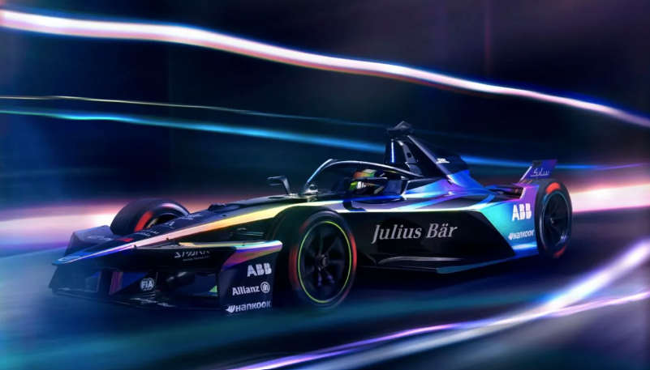
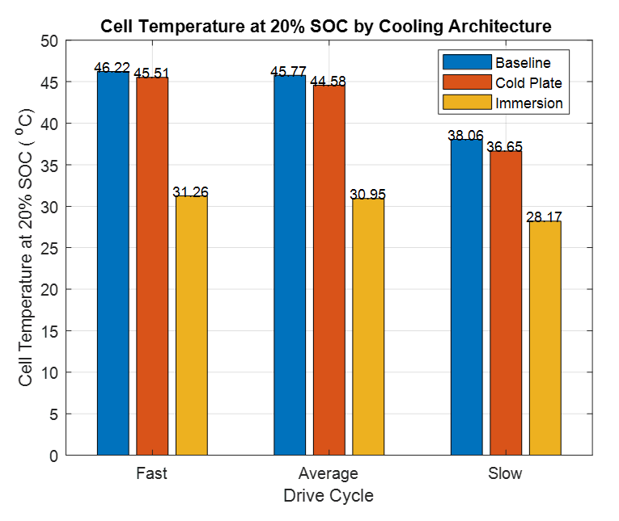

MSc dissertation · Battery engineering
Formula E Battery and Thermal Modelling
Developed a Formula E-inspired electrochemical-thermal battery model and reconstructed race-drive cycles, vehicle specifications, and battery operating conditions.
Simulated three driving scenarios — fast, average, and slow — and compared a baseline configuration against two cooling architectures: cold-plate and immersion cooling.

Key result: immersion cooling reduced cell temperature from 46.22°C to 31.26°C in the fast-drive scenario at 20% SOC.